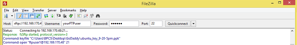

Configure ProFTPd to use SFTP instead of FTP on CentOS, Fedora, Security, Linux basics.
Configure ProFTPd to Use SFTP Instead of FTP - CentOS, Fedora
Difficulty: 1
Time: 20 minutes
ProFTPd is a File Transfer Protocol (FTP) server and open source software compatible with Linux/Unix systems and Microsoft Windows. SFTP (which stands for SSH File Transfer Protocol or Secure File Transfer Protocol) is a separate protocol packaged with SSH that works in a similar way over a secure connection.
In this article, you will learn to configure ProFTPd to use SFTP on CentOS 6, 7 and Fedora 20, 21 using FileZilla as your FTP client. FileZilla is free and available on all major operating systems. You can download it from
http://filezilla-project.org.
Install ProFTPd
- Install ProFTPd.
sudo yum -y install proftpd
- Open the ProFTPd configuration file.
sudo vim /etc/proftpd.conf
- Change the
ServerName to your FQDN or your public IP.
ServerName "your_Domain_Or_IP_Address"
-
Add the following code below the DefaultServer variable label:
Port 9011
-
Save and close the file by pressing the Esc key, then typing
:wq! and then pressing the Enter key.
- Restart the Proftpd services using following command:
sudo systemctl restart proftpd.service
- Check the status of ProFTPd service using following command:
sudo systemctl status proftpd.service
Create your FTP user
If you don't already have an FTP user, create one now in your command line.
- Create your user.
sudo useradd yourFTPuser
- Set a password for your user.
sudo passwd yourFTPuser
Choose a password and confirm it at the prompts.
Set up firewall rules
Setting up the firewall rules is optional step for those who didn’t configure firewall in CentOS or Fedora Server.
- Use the following command to enable incoming request.
firewall-cmd --add-port=9011/tcp -permanent
- Reload the firewall using the below command, to have the added rules effect.
firewall-cmd -reload
- Verify the rule added successful using the following command:
firewall-cmd --list-ports
- Change the
SELINUX to allow read/write the files.
setsebool -P allow_ftpd_full_access=1
- Restart the ProFTPd using the following command:
systemctl restart proftpd.service
Test ProFTPd
- Open FileZilla or another SFTP or FTP client such as WinSCP.

- Enter Host (or IP address), ftpusername, password and Port number, and click Quickconnect. FileZilla connects automatically using your SSH keys.
Conclusion
In this article, you have learned to install and configure ProFTPd in CentOS or Fedora.